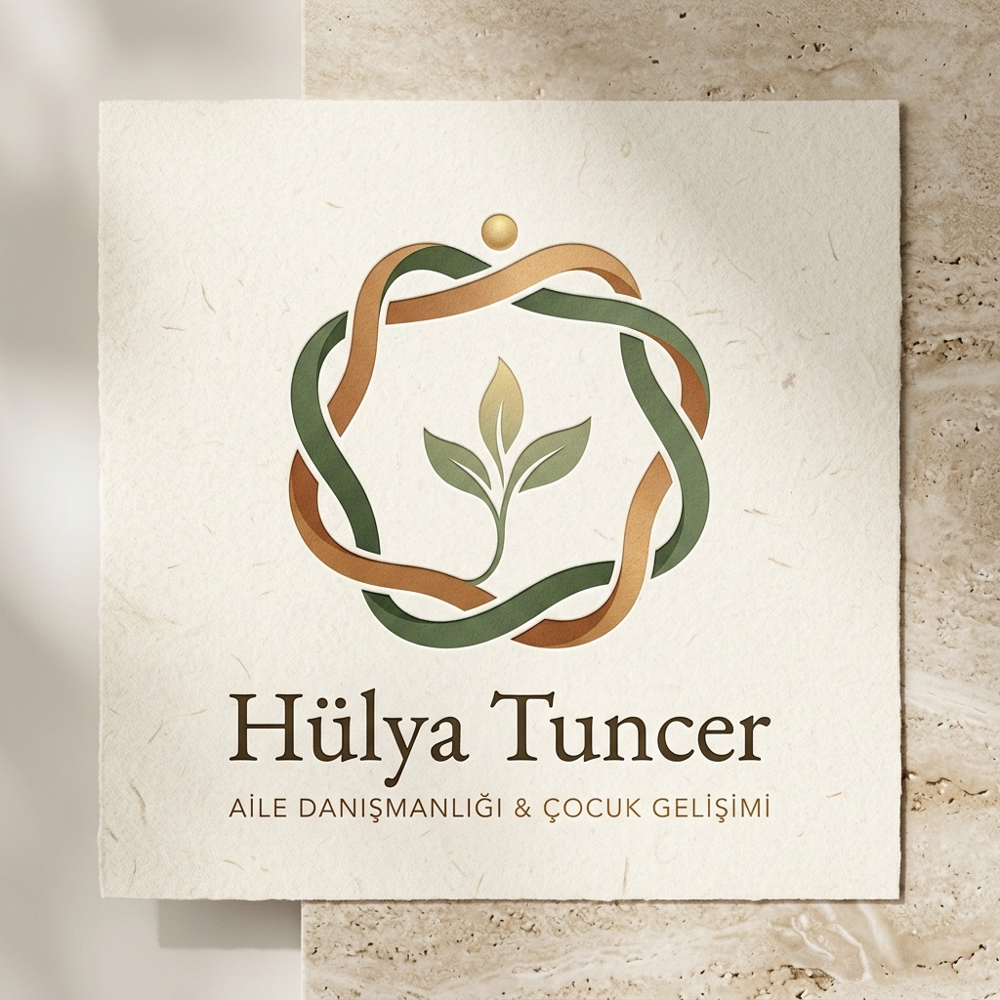
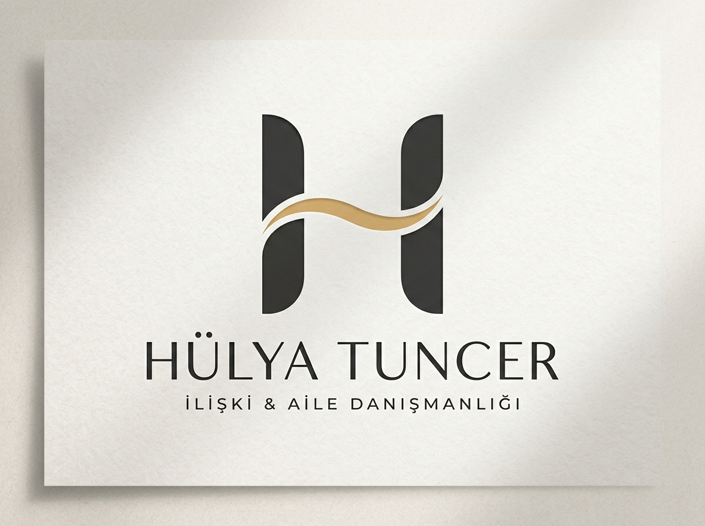
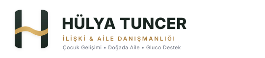
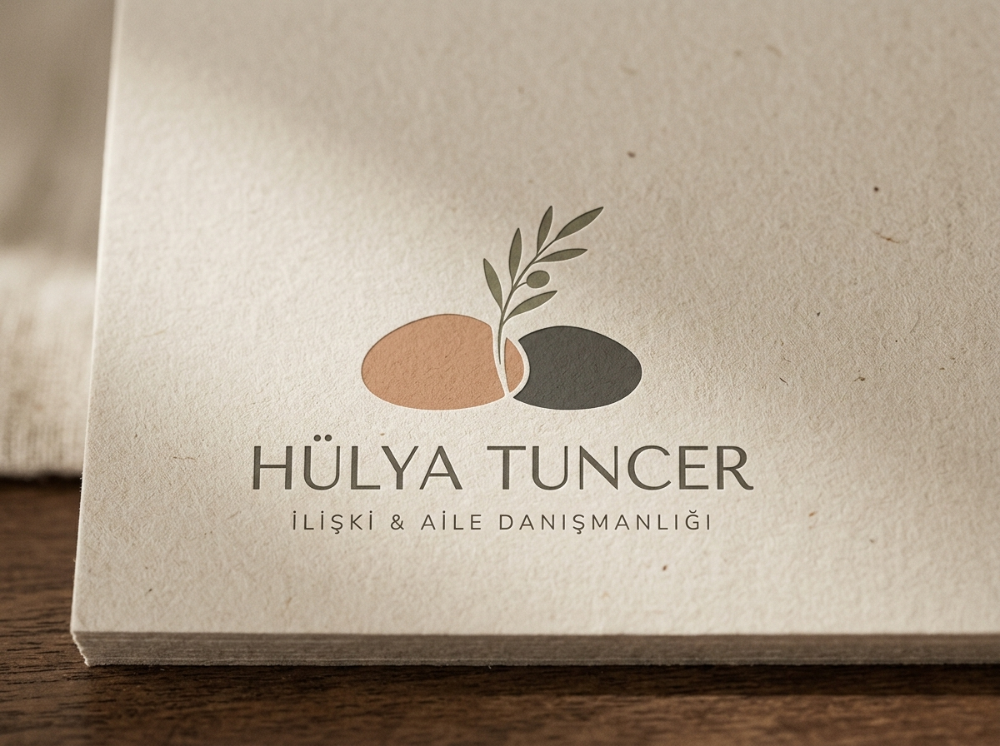
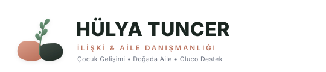
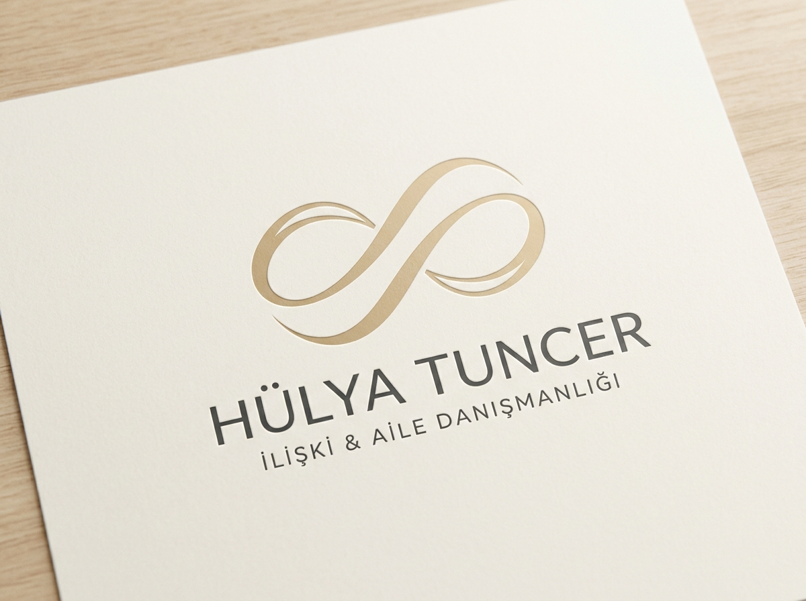
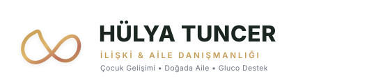

İlişkiler, Ortak Yaşam & İnsan Ruhu İçin
Seçkin Marka Kimliği Koleksiyonu
Bir aile ve ilişki danışmanı yalnızca geleneksel çekirdek aileyi değil; birlikte büyüyen iki kardeşi, aynı hayatı ve evi paylaşan iki yol arkadaşını, hayat ortaklarını ve insanın kendisiyle kurduğu içsel bağı ele alır. Hiçbir bayrak, arma veya tek tip simetriye kaçmadan; hem sıcak dokuma felsefesini hem de modern İskandinav minimalizmini kucaklayan tasarımlar.
"Hayatın Dokusu"
(The Living Loom & Woven Ring)
“Kendi kökünde özgür, kendi gövdesinde dik; ama aynı gökyüzünde, aynı dokumada bir.”
İki bağımsız hayatı simgeleyen iki zarif şerit (orman adaçayı yeşili & sıcak terracotta karamel); birbirini boğmadan, nefes ve saygı alanı bırakarak birbirinin içinden geçer. Ortadaki ferah alanda göğe uzanan canlı üç yapraklı hayat filizi ve zirvedeki altın bilinç çiyi (inci) ile aydınlığı ve ortak büyümeyi temsil eder.



Monogram "H"
(The Bridge of Connection)
“İki bağımsız sütun; aralarında kurulan şefkatli bir diyalog ve iletişim dalgası.”
Hülya Tuncer'in baş harfi "H" üzerine kurulu, İsviçre / İskandinav grafik çizgilerine sahip minimalist bir konsept. İki ayrı mimari sütun (iki kardeş, iki ev arkadaşı veya danışan ile kendi benliği); ortada birbirine uzanan yumuşak altın bir diyalog dalgasıyla bağlanır.




Doğallık ve Akış Arayışları İçin Alternatifler
"Çakıl Taşları Uyumu & Zeytin Dalı"
(Pebble Harmony & Botanical Sprout)
“Yan yana duran iki taş birbirine yük olmaz; aralarından hayat ve barış filizlenir.”
Asimetrik, pürüzsüz iki doğal nehir taşı: Biri sıcak pişmiş toprak (terracotta), diğeri dingin arduvaz tonunda. Yan yana, birbirini ezmeden dinlenirler. Aralarından yukarı doğru zarif bir zeytin dalı filizlenir. Topraklanmayı, dinginliği ve ilişkilerdeki huzuru simgeler.




"Akışkan Şerit & Yaşam Döngüsü"
(Continuous Ribbon Loop)
“İlişki sabit bir nokta değildir; birlikte akılan, nefes alan kesintisiz bir yolculuktur.”
Şampanya sarısı ve altın tonlarında, kaligrafik kalınlık geçişlerine sahip asimetrik tek hatlı bir kurdele. Mekanik bir sonsuzluk işareti yerine, organik kıvrımlarla dans eden açık ve ferah bir bağ.




"İki Kök, Tek Gökyüzü"
(Two Entwined Trees & Canopy)
“Köklerimiz ayrı, ama gölgemiz ve gökyüzümüz bir.”
İki fidan... İkisi de kendi bağımsız gövdesine sahip. Ancak yukarı uzandıklarında dalları birbirine alan açan dairesel bir taç oluşturur. Doğada Aile projeleriyle birebir rezonansa giren organik yaklaşım.